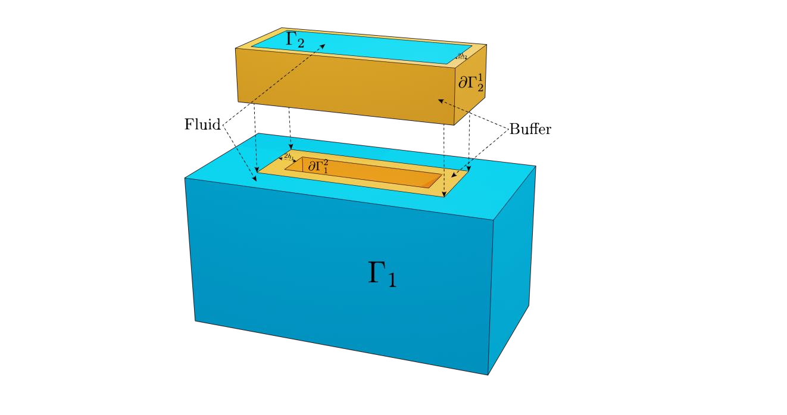
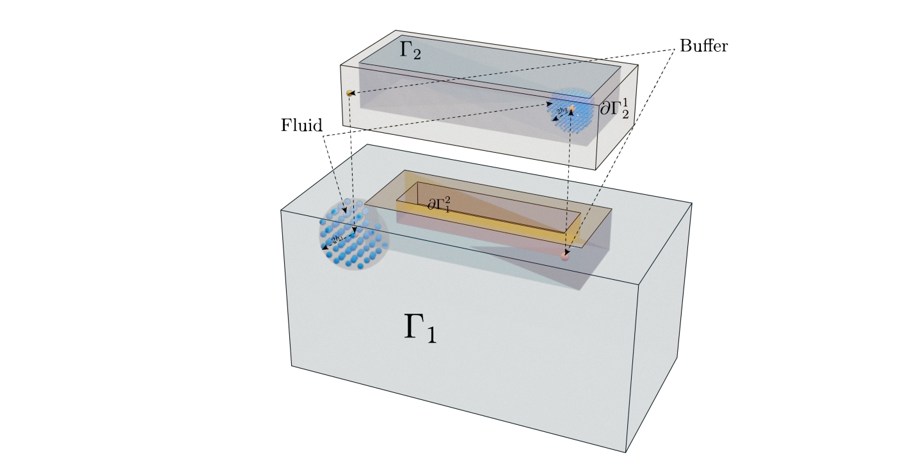
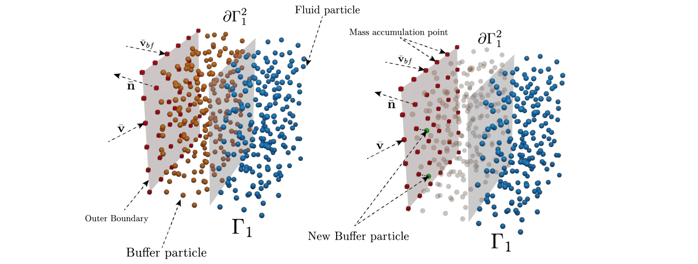
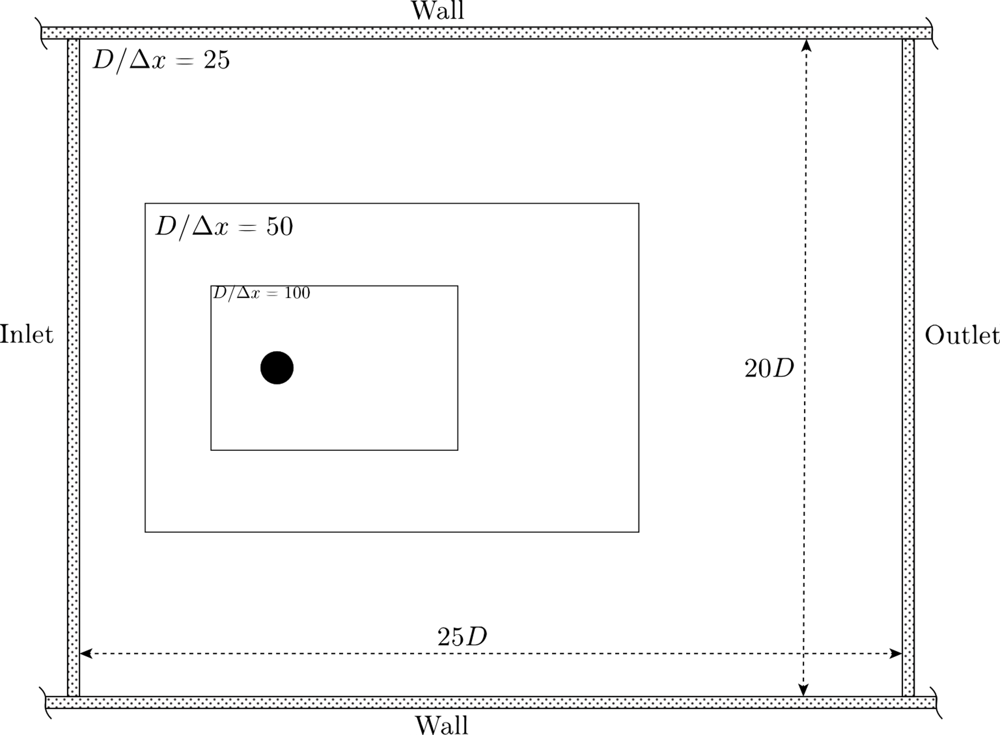
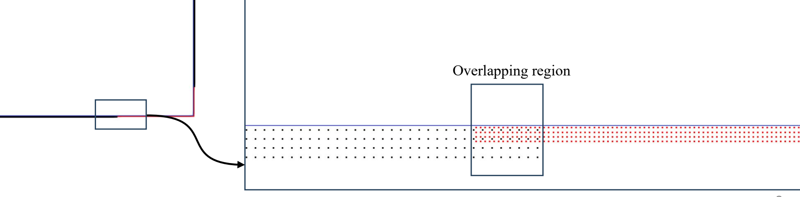
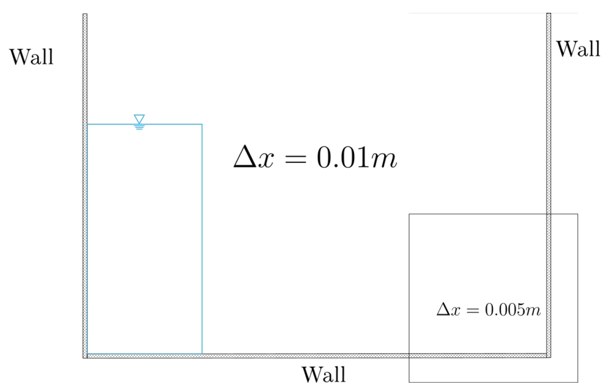
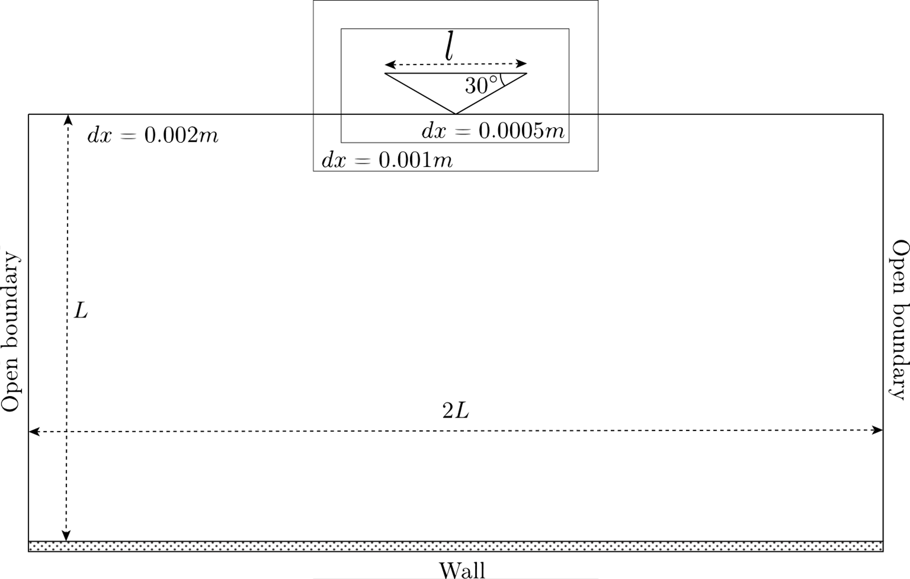
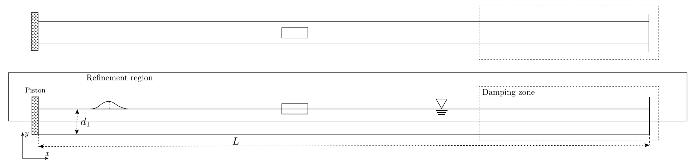
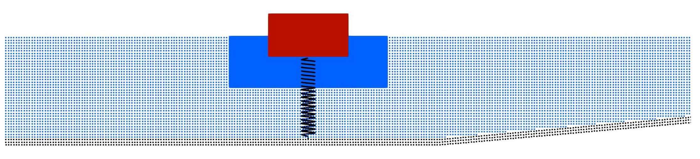
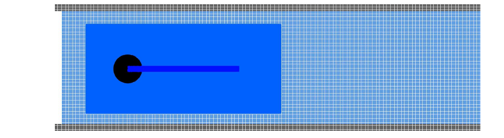

Variable resolution¶
Under review by Francesco Ricci
Domain decomposition, buffer exchange, refinement geometry and moving resolution regions in DualSPHysics v6.
Domain decomposition and particle exchange¶
Variable resolution assigns different particle spacings to different parts of a simulation. In the domain-decomposition method used here, each subdomain has its own particles and resolution. Additional buffer regions impose Dirichlet boundary conditions using information interpolated from adjacent subdomains. This allows a region around a body or another feature of interest to use a different spacing from the surrounding fluid.
Particles belonging to different resolution domains do not take part in the usual direct fluid–fluid SPH interaction with one another. Instead, each domain interacts with its own buffer particles, whose physical properties are reconstructed from the coupled domain. The transfer of mass is evaluated through the Eulerian flux at points on the domain boundaries. Particles are created and removed in the buffers as required by that exchange.
This description is important when interpreting refinement. The documented method uses separate coupled particle populations. It does not prescribe splitting every coarse particle into a fixed set of children or merging fine particles into a single coarse particle. A particle moving towards an interface belongs to its own subdomain; the exchange procedure supplies the neighbouring domain's buffer population. The XML described below does not define a general error-based adaptive splitting/merging criterion, a mass-redistribution rule or a user-selected conservation correction.
The formulation is described by F. Ricci, R. Vacondio and A. Tafuni, Multiscale smoothed particle hydrodynamics based on a domain-decomposition strategy, Computer Methods in Applied Mechanics and Engineering, 418, 116500 (2024). The subsequent three-dimensional development is described by the same authors in Three-dimensional variable resolution for multi-scale modeling in Smoothed Particle Hydrodynamics, Computer Physics Communications (2025). These publications provide the theoretical context; the XML and execution controls below follow the supplied current configuration references.



Configuration hierarchy and identifiers¶
The definition belongs under case/casedef/vres. Each child bufferbox describes a resolution region. Sibling boxes define independent children of the same parent; a box nested inside another box creates a further level. The XML nesting therefore expresses the parent–child relationships used by the method.
| XML location | Purpose |
|---|---|
case/casedef/geometry/definition |
Base spacing dp, generation bounds and reference point |
case/casedef/vres |
Root variable-resolution definition and outer-domain buffer setting |
vres/bufferbox, recursively |
Child-region position, size, spacing ratio, overlap and tracking |
bufferbox/simulationdomain |
Computational bounds associated with the child domain |
case/execution/special |
Feature configuration selected for the intended resolution domain |
case/execution/parameters |
Solver parameters and domain-dependent activation expressions |
active="true" or active="false" can activate or deactivate the vres definition and individual boxes. Retain the resulting hierarchy when changing activation: a child is part of its parent's definition. The outermost domain is identified by #VResId==0; active child domains receive subsequent identifiers as the hierarchy is processed. Reordering or disabling boxes can therefore change the identifiers used by conditional special configurations. Do not use a figure's descriptive “Zone 2” label as an assumed value of VResId.
The excerpts on this page are independent selections from their stated source cases or references. They require the enclosing geometry, constants, body definitions, data files and solver settings. They must not be assembled into a new simulation by copying unrelated sections together.
Base spacing, refinement ratio and nested regions¶
The base spacing is the dp attribute of geometry/definition. A child region's dpratio compares its parent spacing with its own spacing. In mathematical notation, the current definition reader applies
Thus r=2 halves the spacing at that parent–child interface. Ratios apply successively down the tree; two levels with ratio 2 give a spacing four times finer than the outer domain. The March 2025 configuration guidance recommends \(0.5<r<2.5\). This is guidance for selecting neighbouring resolutions, rather than a universal validated range or an imposed limit on the number of levels. A ratio below 1 corresponds mathematically to a larger child spacing; the examples below use refinement ratios of 2.
Nested cylinder regions¶
The cylinder example uses a base spacing of 0.004 m, a cylinder radius of 0.05 m and two nested regions with ratio 2. Its outer, first-child and second-child spacings are therefore 0.004, 0.002 and 0.001 m. For diameter \(D=0.1\) m, the corresponding \(D/dp\) values are 25, 50 and 100.
XML excerpt — cylinder-base-spacing. XML location: case/casedef/geometry. Source: examples/vresolution/02_FlowCylinderRe/CaseFlowCylinderRe200VRes_Def.xml. Retain the surrounding source case and its inputs; this fragment is not a complete simulation.
<definition dp="0.004" units_comment="metres (m)">
<pointref x="0" y="0" z="0" />
<pointmin x="-1.7" y="0" z="-1.1" />
<pointmax x="2.2" y="0" z="1.1" />
</definition>
case/casedef. Source: examples/vresolution/02_FlowCylinderRe/CaseFlowCylinderRe200VRes_Def.xml. Retain the surrounding source case and its inputs; this fragment is not a complete simulation.
<vres active="true">
<buffsizeh v="2" comment="Buffer size according to H (H*v) (default v=2)" />
<bufferbox>
<!-- Refinement level 1 -->
<point x="-0.30" y="0" z="-0.51" />
<size x="1.5" y="0.0" z="1" />
<dpratio v="2" comment="Refinement ratio." />
<buffsizeh v="2" comment="Buffer size according to H (H*v) (default v=2)" />
<simulationdomain useparent="true" comment="Defines domain of simulation"/>
<bufferbox active="true">
<!-- Refinement level 2 -->
<point x="-0.10" y="0" z="-0.250" />
<size x="0.75" y="0.0" z="0.5" />
<dpratio v="2.0" comment="Refinement ratio." />
<simulationdomain useparent="true" comment="Defines domain of simulation"/>
</bufferbox>
</bufferbox>
</vres>

| Domain | Parent–child ratio | Spacing in this case | Diameter/spacing |
|---|---|---|---|
| Outer domain | — | 0.004 m | 25 |
| First nested region | 2 | 0.002 m | 50 |
| Second nested region | 2 | 0.001 m | 100 |
The Re=9500 variant, examples/vresolution/02_FlowCylinderRe/CaseFlowCylinderRe9500VRes_Def.xml, contains five nested refinement boxes. It illustrates a deeper hierarchy, not an arbitrary maximum supported by every case. Keep its original domain extents, physical parameters and interpolation settings when using it as a starting point.
Region geometry and transition widths¶
Position, extent and required clearance¶
point supplies the initial corner of a rectangular region. Define its extent using either size or endpoint. With size, the opposite corner is point + size; with endpoint, it is given explicitly. The current reader rejects a box containing both alternatives. Two-dimensional examples lie in an x–z plane and have zero y extent; a three-dimensional region requires the corresponding spatial extent.
The geometric box and the complete computational bounds are different objects. Buffer and fixed-support regions extend around the child region. The current box construction checks that the fitted child region and its surrounding fixed limits lie within the parent region. Leave space for this surrounding support, including during tracked movement. A nominal child box just inside its parent is not sufficient evidence that the complete transition geometry fits.
| Element | Meaning | Default or source guidance |
|---|---|---|
point |
Initial box corner | Explicit coordinates |
size or endpoint |
Extent or opposite corner | Choose one alternative |
dpratio v="..." |
Parent spacing / child spacing | Explicit value; source examples use 2 |
buffsizeh v="..." |
Buffer width measured in smoothing lengths | Default 2 |
overlappingh v="..." |
Additional overlap measured in smoothing lengths | Default 0; explicitly activate when required |
tracking mkbound="..." |
Moving/floating object followed by the region | Optional; marker must identify the intended body |
simulationdomain |
Associated computational bounds | Optional explicit settings; see below |
The v attribute is required by the current dpratio reader. One tracking illustration in the complete format reference uses value="2.0"; the current copyable excerpt below uses v="2.0", retaining the ratio. The complete source reference at the end remains verbatim.
The smoothing-length convention is \(h=(h/dp)\,dp\). The two transition-width controls describe lengths:
where \(b\) is buffsizeh and \(o\) is overlappingh. These lengths must not be interpreted as a count of newly split particles. The root buffsizeh configures the outer domain; the current reader also reads each child's own buffsizeh, with default 2 when absent. Do not assume an arbitrary root value is automatically inherited by every child.
Overlap at walls and free surfaces¶
The documented guidance recommends overlap when an interface crosses a solid boundary or a free surface. overlappingh explicitly controls its extent, separately from buffsizeh. A value omitted from a child definition leaves the documented default of zero. Increasing the buffer width and enabling overlap represent different changes and should not be substituted for one another.
The dam-break case uses ratio 2, buffer factor 2 and overlap factor 2. Its refinement region starts at (2.5, 0, −0.20) m and ends at (4.1, 0, 0.60) m:
XML excerpt — dam-break-overlap. XML location: case/casedef. Source: examples/vresolution/01_DamBreak2D/CaseDambreak2DVRes_Def.xml. Retain the surrounding source case and its inputs; this fragment is not a complete simulation.
<vres active="true">
<buffsizeh v="2" comment="Buffer size according to H (H*v) (default v=2)" />
<bufferbox>
<point x="2.5" y="0" z="-0.20" />
<endpoint x="4.1" y="0" z="0.60" />
<dpratio v="2" comment="Refinement ratio." />
<buffsizeh v="2" comment="Buffer size according to H (H*v) (default v=2)" />
<overlappingh v="2" comment="Overlapping size according to H (H*v) (default v=0)" />
<simulationdomain useparent="true" comment="Defines domain of simulation"/>
</bufferbox>
</vres>

Boundary generation and reference points¶
When a resolution interface crosses a solid boundary, particle placement must represent that boundary consistently at the different spacings. The documented dam-break configuration sets all three pointref components to #Dp/2 in geometry/definition. Dp is evaluated for the resolution used to generate the domain; retaining the expression is important. Replacing it with one fixed coarse-domain offset changes the generation convention for refined domains.
XML excerpt — wall-reference-point. XML location: case/casedef/geometry. Source: examples/vresolution/01_DamBreak2D/CaseDambreak2DVRes_Def.xml. Retain the surrounding source case and its inputs; this fragment is not a complete simulation.
<definition dp="0.01" units_comment="metres (m)">
<pointref x="#Dp/2" y="#Dp/2" z="#Dp/2" />
<pointmin x="-0.1" y="0" z="-0.4" />
<pointmax x="4.2" y="0" z="3.5" />
</definition>

The same source case uses mDBC with SlipMode=M22 and no advanced shifting. The cylinder example uses mDBC with no-slip and advanced shifting, whereas the floating-duck example uses DBC. These are particular configurations; they do not establish that every slip mode, boundary formulation and refinement geometry can be interchanged without review.
For the geometry, normal vectors and slip options themselves, see Modified Dynamic Boundary Conditions. Retain the normal-generation and boundary-layer configuration of the complete selected case. Variable-resolution geometry does not replace the mDBC normal definition or select a slip mode automatically.
XML excerpt — dam-break-boundary. XML location: case/execution/parameters. Source: examples/vresolution/01_DamBreak2D/CaseDambreak2DVRes_Def.xml. Retain the surrounding source case and its inputs; this fragment is not a complete simulation.
<parameter key="Boundary" value="mDBC" comment="Boundary method: DBC, mDBC, MIX:MixBC (default=DBC)" />
case/execution/parameters. Source: examples/vresolution/01_DamBreak2D/CaseDambreak2DVRes_Def.xml. Retain the surrounding source case and its inputs; this fragment is not a complete simulation.
<parameter key="SlipMode" value="M22" comment="Slip mode for mDBC: NS:No-slip, FS:Free slip, V0:TanVel=0, M22:mDBC 2022 (default=NS)" />
Computational bounds and moving regions¶
Explicit domain limits¶
The point and size of a bufferbox locate the refinement region; simulationdomain controls the associated computational bounds. This distinction matters for movement: a region that follows a falling or translating body needs computational space along the expected path.
simulationdomain useparent="true" uses the parent-domain basis for the child computational bounds. With useparent="false", the child uses its own domain basis. The default when omitted is false. The root domain cannot use useparent="true". Optional posmin and posmax components use the existing domain-bound syntax, including default and percentage extensions; they are not percentages of the body's size or a refinement ratio.
The source falling-wedge configuration extends each nested computational domain using its actual default - 400% and default+100% expressions. Retain the exact expressions and bounds needed for that motion. The generic tracking illustration below instead uses ±25% in x and ±10% in z; these are separate examples and must not be substituted for the wedge's settings.
XML excerpt — reference-tracking-domain. XML location: case. Source: doc/xml_format/_FmtXML__VRes.xml. Retain the surrounding source case and its inputs; this fragment is not a complete simulation.
<casedef>
<vres>
<bufferbox>
<point x="-0.30" y="0" z="-0.51" />
<size x="1.5" y="0.0" z="1" />
<dpratio v="2.0" comment="Refinement ratio"/>
<bufferbox>
<point x="-0.10" y="0" z="-0.250"/>
<size x="0.75" y="0.0" z="0.5" />
<dpratio v="2.0" comment="Refinement ratio"/>
<tracking mkbound="1" comment="Reference to moving or floating object inside refinement region"/>
<simulationdomain useparent="false" comment="Defines an specific domain of simulation for current subdomain">
<posmin x="default - 25%" y="default" z="default - 10%" />
<posmax x="default + 25%" y="default" z="default + 10%" />
</simulationdomain>
</bufferbox>
</bufferbox>
</vres>
</casedef>
Tracking a moving or floating body¶
tracking identifies the body using its mkbound, rather than a fluid marker or a resolution-domain identifier. The documented tracking examples follow the body's translational movement. A tracked refinement region retains its intended position relative to the body, while its initially defined computational limits must accommodate that motion. Do not infer a general rotation-following capability from a translating example.
The falling wedge uses mkbound=51 in its geometry, floating-body definition and both tracking elements. The body has mass 241 and initial vertical velocity −6.15 m/s. The two region ratios of 2 produce spacings of 0.001 and 0.0005 m from the base 0.002 m. Both levels explicitly track the same object; merely nesting a child is not a substitute for its tracking declaration.
XML excerpt — wedge-body. XML location: case/casedef. Source: examples/vresolution/04_FallingWedge2D/CaseFallingWedge2DVRes_Def.xml. Retain the surrounding source case and its inputs; this fragment is not a complete simulation.
<floatings>
<floating mkbound="51">
<massbody value="241" />
<linearvelini x="0" y="0" z="-6.15" />
</floating>
</floatings>
case/casedef. Source: examples/vresolution/04_FallingWedge2D/CaseFallingWedge2DVRes_Def.xml. Retain the surrounding source case and its inputs; this fragment is not a complete simulation.
<vres >
<bufferbox>
<point x="-0.49" y="0" z="1.31" />
<size x="0.98" y="0" z="0.59" />
<dpratio v="2.0" comment="Refinement ratio" />
<overlappingh v="2" comment="Overlapping size according to H (H*v) (default v=0)" />
<tracking mkbound="51" comment="Reference to moving or floating object inside refinement region." />
<simulationdomain comment="Defines domain of simulation (default=Uses minimun and maximum position of the generated particles)">
<posmin x="default - 400%" y="default" z="default - 400%" comment="e.g.: x=0.5, y=default-1, z=default-10%" />
<posmax x="default+100% " y="default" z="default+100% " />
</simulationdomain>
<bufferbox>
<point x="-0.39" y="0" z="1.40" />
<size x="0.79" y="0" z="0.398" />
<dpratio v="2.0" comment="Refinement ratio" />
<overlappingh v="2" comment="Overlapping size according to H (H*v) (default v=0)" />
<tracking mkbound="51" comment="Reference to moving or floating object inside refinement region." />
<simulationdomain comment="Defines domain of simulation (default=Uses minimun and maximum position of the generated particles)">
<posmin x="default-400%" y="default" z="default - 400%" comment="e.g.: x=0.5, y=default-1, z=default-10%" />
<posmax x="default+100% " y="default" z="default+100% " />
</simulationdomain>
</bufferbox>
</bufferbox>
</vres>

Fluid generation and fillbox seeds¶
Fluid generation is performed for the relevant resolution domain. A fillbox seed outside a refinement region does not seed the fluid inside that region. For nested regions, the documented guidance is to place the seed in the innermost region. For disjoint regions, use multiple fillbox definitions with different seed positions while retaining the same fluid marker when the fluid is intended to have the same marker.
The floating-duck case provides a concrete three-dimensional seed. The source coordinates (3.12, 0, 0.32) m lie inside its initial refinement box, which starts at (3.0, −0.18, 0.26) m and has size (0.5, 0.36, 0.44) m. The point and size inside fillbox define the filling extent; the x, y and z attributes on fillbox define the seed. These roles should not be confused.
XML excerpt — duck-fluid-marker. XML location: case/casedef/geometry/commands/mainlist. Source: examples/vresolution/05_FloatingDuck/CaseFloatingDuckVRes_Def.xml. Retain the surrounding source case and its inputs; this fragment is not a complete simulation.
case/casedef/geometry/commands/mainlist. Source: examples/vresolution/05_FloatingDuck/CaseFloatingDuckVRes_Def.xml. Retain the surrounding source case and its inputs; this fragment is not a complete simulation.
<fillbox x="3.12" y="0.0" z="0.32">
<modefill>void</modefill>
<point x="-1" y="-1" z="-1"/>
<size x="20" y="2" z="#1.4+Dp/2"/>
</fillbox>
case/casedef. Source: examples/vresolution/05_FloatingDuck/CaseFloatingDuckVRes_Def.xml. Retain the surrounding source case and its inputs; this fragment is not a complete simulation.
<vres active="true">
<buffsizeh comment="Buffer size according to H (H*v) (default v=2)" v="2"/>
<bufferbox active="true">
<point x="3.0" y="-0.18" z="0.26" />
<size x="0.5" y="0.36" z="0.44" />
<dpratio v="2.0" comment="Refinement ratio" />
<buffsizeh v="2" comment="Buffer size according to H (H*v) (default v=2)" />
<overlappingh v="2"/>
<tracking mkbound="20" comment="Reference to moving or floating object inside refinement region." />
<simulationdomain comment="Defines domain of simulation (default=Uses minimun and maximum position of the generated particles)">
<posmin x="default-400%" y="default-100%" z="default - 400%" comment="e.g.: x=0.5, y=default-1, z=default-10%" />
<posmax x="default+400% " y="default+100%" z="default+100% " />
</simulationdomain>
</bufferbox>
</vres>
For an independent-region illustration, the following two seed definitions retain the original positions (3.0, 0, 0.26) and (5.0, 0, 0.26). They illustrate the need for a separate seed for each disjoint region. Their seeds lie on the lower initial box elevation; for a new geometry, choose seed placement according to its generated fluid and boundary configuration, rather than treating these coordinates as universal interior points.
XML excerpt — independent-fill-seeds. XML location: case/casedef/geometry/commands/mainlist. Source: doc/guides/XML_GUIDE_VRESOLUTION.pdf. Retain the surrounding source case and its inputs; this fragment is not a complete simulation.
<setmkfluid mk="1"/>
<fillbox x="3.0" y="0" z="0.26">
<modefill>void</modefill>
<point x="-1" y="-1" z="-1"/>
<size x="20" y="2" z="#1.4+Dp/2"/>
</fillbox>
<fillbox x="5.0" y="0" z="0.26">
<modefill>void</modefill>
<point x="-1" y="-1" z="-1"/>
<size x="20" y="2" z="#1.4+Dp/2"/>
</fillbox>
case/casedef. Source: doc/guides/XML_GUIDE_VRESOLUTION.pdf. Retain the surrounding source case and its inputs; this fragment is not a complete simulation.
<vres active="true">
<buffsizeh comment="Buffer size according to H (H*v) (default v=2)" v="2"/>
<bufferbox active="true">
<point x="3.0" y="-0.18" z="0.26" />
<size x="0.5" y="0.36" z="0.44" />
<dpratio v="2.0" comment="Refinement ratio" />
<buffsizeh v="2" comment="Buffer size according to H (H*v) (default v=2)" />
<overlappingh v="2"/>
<tracking mkbound="20" comment="Reference to moving or floating object inside refinement region." />
<simulationdomain>
<posmin x="default-400%" y="default-100%" z="default - 400%" />
<posmax x="default+100% " y="default+100%" z="default+100% " />
</simulationdomain>
</bufferbox>
<bufferbox active="true">
<point x="5.0" y="-0.18" z="0.26" />
<size x="0.5" y="0.36" z="0.44" />
<dpratio v="2.0" comment="Refinement ratio" />
<buffsizeh v="2" comment="Buffer size according to H (H*v) (default v=2)" />
<overlappingh v="2"/>
<simulationdomain useparent="true"/>
</bufferbox>
</vres>
The first independent region tracks mkbound=20 and has explicit computational extensions; the second uses useparent="true". Their different domain settings and tracking status are intentional parts of this illustration. A corresponding full case, fluid marker and tracked-body definition are still required.
Interpolation order, conditioning and execution options¶
The maximum interpolation order, reconstruction method and arithmetic precision control different parts of the exchange. Zeroth order uses normalised Shepard interpolation. First and second order use higher-order reconstruction, subject to the conditioning check. Liu–Liu correction and Moving Least Squares (MLS) are alternative algorithms; neither option changes the XML parent–child spacing ratio.
For a scalar field \(f\), the normalised zeroth-order value has the form
where \(b\) denotes the buffer location and the sum uses donor fluid particles in the coupled domain. The reconstruction applies to density and velocity components. Insufficient neighbour support and ill-conditioned higher-order reconstruction must be distinguished from changing the physical inlet velocity or imposing a different pressure law.
| Command-line option | Meaning | Current source default |
|---|---|---|
-vres |
Select variable-resolution execution | The current launcher can also detect generated _vres00.bi4 input |
-vres_order:0 |
Zeroth-order Shepard interpolation | Default order is 1 |
-vres_order:1 |
Maximum first order | 1 |
-vres_order:2 |
Maximum second order | — |
-vres_method:0 |
Liu–Liu correction | 0 |
-vres_method:1 |
Moving Least Squares | — |
-vres_threshold:100 |
Threshold in the reconstruction-conditioning decision | 100 |
-vres_fast:1 |
Single-precision buffer interpolation on GPU | 1 |
-vres_fast:0 |
Double-precision buffer interpolation on GPU | — |
The second-order value is 2. Use the underscore forms -vres_method and -vres_threshold; they are separate options from -vres. The supplied help lists order, precision and threshold, while the current parser additionally recognises -vres_method. Retain these distinctions when selecting a binary and checking its help. The GPU interpolation precision flag does not select coordinate-output precision, and should not be interpreted as a documented CPU precision switch.
The threshold is used in a scaled conditioning test that can fall back to zeroth-order interpolation. In the current implementation, the fallback comparison uses an indicator greater than the specified threshold. Lowering the threshold can therefore trigger that fallback more readily; it is not a promise of a more accurate interface. The documented troubleshooting suggestions are to reduce the maximum order, reduce the threshold (the original guidance suggests values below 500), or investigate MLS for a free-surface configuration. The original guidance characterises MLS as more stable but less accurate in that context; it does not establish a general ranking for every flow.
Keep the current default of 100 distinct from the below-500 troubleshooting suggestion. Review neighbour support, region clearance and the physical configuration before treating interpolation settings as a remedy for interface noise. Record the chosen algorithm, order and precision when comparing results.
Generating a vres definition and selecting solver execution are separate steps. The package's existing BAT files invoke GenCase and the solver using the generated case names; the current launcher recognises variable-resolution data. The options above describe configuration syntax only and are not an instruction to execute a case or replace a complete launch script.
Domain-specific special configurations¶
Special features must be selected for the intended resolution domain. #VResId allows activation expressions to keep external forcing or a coupling in the appropriate domain. An expression selecting domain 0 refers to the outermost domain. It does not mean “all refinement levels”.
Inlet/Outlet and outer periodic boundaries¶
The cylinder configuration enables its Inlet/Outlet section only in the outer domain. The full section below retains the source's initial allocation, extrapolation settings, seed markers, inlet velocity expression and outlet reconstruction. Its #fluidvel expression is defined in the original case geometry; the inout fragment does not define that variable itself.
XML excerpt — outer-inletoutlet. XML location: case/execution/special. Source: examples/vresolution/02_FlowCylinderRe/CaseFlowCylinderRe200VRes_Def.xml. Retain the surrounding source case and its inputs; this fragment is not a complete simulation.
<inout active="#VResId==0">
<memoryresize size0="2" size="4" comment="Initial memory resize (size0) and the following memory resizes according to initial inlet/outlet particles (default=2 and 4)" />
<determlimit value="1e-3" comment="Use 1e-3 for first_order or 1e+3 for zeroth_order (default=1e+3)" />
<extrapolatemode value="3" />
<!-- INFLOW BUFFER -->
<inoutzone>
<refilling value="1" comment="Refilling mode. 0:Simple full, 1:Simple below zsurf, 2:Advanced for reverse flows (very slow) (default=1)" />
<inputtreatment value="2" comment="Treatment of fluid entering the zone. 0:No changes, 1:Convert fluid (necessary for outlet), 2:Remove fluid (recommended for inlet)" />
<layers value="4" comment="Number of inlet/outlet particle layers" />
<zone2d comment="Input zone for 2D simulations">
<particles mkfluid="2" direction="right" />
</zone2d>
<imposevelocity mode="0" comment="Imposed velocity 0:fixed value, 1:variable value, 2:Extrapolated value (default=0)">
<velocity v="#fluidvel" comment="Uniform velocity" units_comment="m/s" />
</imposevelocity>
<imposerhop mode="0" comment="Outlet rhop 0:Imposed fixed value, 1:Hydrostatic, 2:Extrapolated from ghost nodes (default=0)" />
</inoutzone>
<!-- OUTFLOW BUFFER -->
<inoutzone>
<refilling value="1" comment="Refilling mode. 0:Simple full, 1:Simple below zsurf, 2:Advanced for reverse flows (very slow) (default=1)" />
<inputtreatment value="1" comment="Treatment of fluid entering the zone. 0:No changes, 1:Convert fluid (necessary for outlet), 2:Remove fluid (recommended for inlet)" />
<layers value="4" comment="Number of inlet/outlet particle layers" />
<zone2d comment="Input zone for 2-D simulations">
<particles mkfluid="3" direction="left" />
</zone2d>
<imposevelocity mode="2" comment="Imposed velocity 0:fixed value, 1:variable value, 2:Extrapolated value (default=0)" />
<imposerhop mode="0" comment="Outlet rhop 0:Imposed fixed value, 1:Hydrostatic, 2:Extrapolated from ghost nodes (default=0)" />
</inoutzone>
<!-- END BUFFERS -->
</inout>
These external open boundaries are separate from the buffers coupling the resolution domains. See the Inlet/Outlet guide for the imposed/extrapolated flow variables, refilling and seed geometry. Activating an outer Inlet/Outlet does not eliminate the internal resolution exchange.
The documented periodic configuration is restricted to the outermost domain. The current cylinder case keeps this condition on its periodic parameter:
XML excerpt — outer-periodicity. XML location: case/execution/parameters. Source: examples/vresolution/02_FlowCylinderRe/CaseFlowCylinderRe200VRes_Def.xml. Retain the surrounding source case and its inputs; this fragment is not a complete simulation.
<parameter key="XPeriodicIncZ" value="0" active="#VResId==0" comment="Increase of Z with periodic BC in axis X" units_comment="metres (m)" />
XPeriodicIncZ identifies the periodic axis and its cross-axis increment; a zero increment does not mean the parameter is inactive. Retain active="#VResId==0" and do not enable the same periodic condition in child domains. Other periodic layouts require their own supported configuration; this example is not a general compatibility statement for all moving-region arrangements.
Waves, shifting and free surfaces¶
The wave demonstrations emphasise advanced shifting. The current floating-duck configuration uses the following related settings. They retain the actual source choices, including ShiftAdvALE=N and ShiftAdvNCPress=N:
XML excerpt — duck-advanced-shifting. XML location: case/execution/parameters. Source: examples/vresolution/05_FloatingDuck/CaseFloatingDuckVRes_Def.xml. Retain the surrounding source case and its inputs; this fragment is not a complete simulation.
<parameter key="Shifting" value="4" comment="Shifting mode 0:None, 1:Ignore bound, 2:Ignore fixed, 3:Full, 4:Full advanced (default=0)" />
case/execution/parameters. Source: examples/vresolution/05_FloatingDuck/CaseFloatingDuckVRes_Def.xml. Retain the surrounding source case and its inputs; this fragment is not a complete simulation.
<parameter key="ShiftAdvCoef" value="-0.01" comment="Coefficient for advanced shifting computation (default=-0.01)" />
case/execution/parameters. Source: examples/vresolution/05_FloatingDuck/CaseFloatingDuckVRes_Def.xml. Retain the surrounding source case and its inputs; this fragment is not a complete simulation.
<parameter key="ShiftAdvALE" value="N" comment="ALE formulation for advanced shifting: Y/N (default=N)" />
case/execution/parameters. Source: examples/vresolution/05_FloatingDuck/CaseFloatingDuckVRes_Def.xml. Retain the surrounding source case and its inputs; this fragment is not a complete simulation.
<parameter key="ShiftAdvNCPress" value="Y" comment="Non conservative pressure formulation for advanced shifting: Y/N (default=N)" />
These settings distinguish the existence of a variable-resolution wave example from a recommendation for every formulation. Advanced shifting, ALE corrections and non-conservative pressure are separate numerical choices. The advanced-formulation documentation discusses improved interior consistency with non-conservative pressure and recommends using it together with advanced shifting and ALE. Its regular-wave comparison uses \(h/dp=2.0,1.5,1.3\), artificial viscosity 0.01, advanced shifting coefficient −0.01 and \(dp=0.015\) m (ten particles per wave height). These are the conditions of that study, rather than new universal defaults or a guarantee for the duck case.
The non-conservative pressure formulation changes the conservation properties of the pressure operator; it must not be described as a conservative refinement operation. The settings above preserve the distributed example's original choices. Review the full numerical formulation when changing them; the presence of advanced shifting alone does not implicitly enable ALE or non-conservative pressure.

Floating bodies, Chrono and flexible structures¶
Tracking selects the region's motion reference, while the floating-body and coupling sections define the object's mechanics. The falling wedge and floating duck illustrate two different floating configurations; neither tracking declaration supplies mass, constrained degrees of freedom or a mechanical link.
The point-absorber case selects its wave paddle in domain 0 and its linear spring link in domain 1. The spring still refers to the body's Chrono identifiers and retains the source endpoints, stiffness, damping and rest length:
XML excerpt — refined-domain-spring. XML location: case/execution/special/chrono. Source: examples/vresolution/06_Special/CasePointAbsorberSpringVRes_Def.xml. Retain the surrounding source case and its inputs; this fragment is not a complete simulation.
<link_linearspring idbody1="Bottom" idbody2="Floater" active="#VResId==1">
<point_fb1 x="2.0" y="0.0" z="0.0" comment="Point in body 1" />
<point_fb2 x="2.0" y="0.0" z="0.325" comment="Point in body 2" />
<stiffness value="100.0" comment="Stiffness [N/m]" />
<damping value="500.0" comment="Damping [Ns/m]" />
<rest_length value="0.325" comment="Spring equilibrium length [m]" />
<savevtk>
<nside value="16" comment="number of sections for each revolution. 0=not saved, 1=line (default=16)" />
<radius value="5.0" comment="spring radius (default=3)" />
<length value="3.0" comment="length for each revolution (default=1)" />
</savevtk>
</link_linearspring>

See Chrono coupling for the body declarations and mechanical link configuration. Selecting the link's active expression is not equivalent to activating or deactivating the complete Chrono model in every domain.
The Turek–Hron example similarly selects its outer Inlet/Outlet with #VResId==0 and its flexible-structure configuration with #VResId==1. This illustrates domain ownership of the coupling. It does not establish that every flexible body, collision model or marker arrangement can be combined with arbitrary refinement trees.

Representative configurations and review checks¶
| Public case path | Configuration illustrated | Interpretation |
|---|---|---|
examples/vresolution/01_DamBreak2D/CaseDambreak2DVRes_Def.xml |
Wall-crossing interface, dp/2 reference point, ratio 2 and overlap | Static refinement with mDBC/M22 |
examples/vresolution/02_FlowCylinderRe/CaseFlowCylinderRe200VRes_Def.xml |
Two nested children; outer Inlet/Outlet and periodic activation | Three coupled resolution domains |
examples/vresolution/02_FlowCylinderRe/CaseFlowCylinderRe9500VRes_Def.xml |
Five nested children | A deeper source hierarchy; retain its original physical setup |
examples/vresolution/03_FlowCylinderTandem/CaseFlowCylinderTandemVRes_Def.xml |
Moving tandem-cylinder configuration | Review each tracked region and body reference |
examples/vresolution/04_FallingWedge2D/CaseFallingWedge2DVRes_Def.xml |
Two regions tracking mkbound 51 | Explicit movement space and separate floating-body definition |
examples/vresolution/05_FloatingDuck/CaseFloatingDuckVRes_Def.xml |
Three-dimensional tracking and fillbox seed | Domain-specific wave generation and advanced-shifting choices |
examples/vresolution/06_Special/CasePointAbsorberSpringVRes_Def.xml |
Chrono spring selected in domain 1 | Mechanical and fluid-domain configurations remain distinct |
examples/vresolution/06_Special/CaseTurekHronFSI2VRes_Def.xml |
Flexible structure in domain 1, outer Inlet/Outlet in domain 0 | Feature activation follows domain ownership |
The examples demonstrate XML configurations and numerical choices. Their inclusion does not establish physical validation, convergence, long-time stability or equivalence between different algorithms. CPU and GPU variable-resolution implementations are present; the GPU precision controls above apply to that interpolation path. These sources do not establish a general multi-GPU compatibility statement.
When preparing a configuration, check the base spacing and every parent–child ratio, box nesting, buffer/fixed-region clearance, overlap at wall/free-surface crossings and the particle-generation reference point. For moving regions, also check marker ownership, each tracking declaration and computational bounds over the intended trajectory. Inspect fluid seeds and every VResId expression after changing the active hierarchy. Keep the complete source case's normal definitions, body mechanics and numerical settings together.
Before interpreting interface behaviour, distinguish a generation problem (missing particles or invalid region geometry), a reconstruction problem (neighbour support and conditioning), and a modelling choice (boundary treatment, shifting or pressure formulation). XML syntax alone cannot decide whether a simulation is physically correct.
Full Variable Resolution XML format reference¶
The following complete supplied reference describes independent regions, nested regions, overlap and tracking. Source: doc/xml_format/_FmtXML__VRes.xml. It retains its original GenCase v5.4.353 header, comments, alternatives, values and ordering. It is a collection of format illustrations with multiple casedef sections and decorative separators, rather than a single executable case.
The outer dpratio in the tracking illustration uses the historical value attribute. The current definition reader requires v, as shown in the corrected short excerpt above. This original line is retained in the verbatim reference; select and review one applicable configuration rather than copying the entire collection into a case.
<?xml version="1.0" encoding="UTF-8" ?>
<!-- *** GenCase v5.4.353 (11-12-2024) *** -->
<!-- *** Variable resolution (VRes) template *** -->
<!------------------------------------------------------------------------------->
<!------------------------------------------------------------------------------->
<!-- Example for several independent buffer zones. -->
<!------------------------------------------------------------------------------->
<casedef>
<vres active="true">
<buffsizeh v="2" comment="Buffer size according to H (H*v) (default v=2)" />
<!-- Defines a buffer zone as a box in 3D (or rectangle in 2D) -->
<bufferbox active="true">
<point x="3" y="0" z="-0.25" />
<size x="1.5" y="0" z="0.75" />
<dpratio v="2.0" comment="Refinement ratio" />
</bufferbox>
<!-- Defines other buffer box using using the end position instead of the size -->
<bufferbox>
<point x="3" y="0" z="-0.25" />
<endpoint x="4.5" y="0" z="0.5" />
<dpratio v="2.0" comment="Refinement ratio" />
<buffsizeh v="3" comment="Buffer size according to H (H*v) (default v=2)" />
</bufferbox>
</vres>
</casedef>
<!------------------------------------------------------------------------------->
<!-- Example for more than 2 levels of resolution. -->
<!------------------------------------------------------------------------------->
<casedef>
<vres>
<bufferbox>
<point x="-0.30" y="0" z="-0.51" />
<size x="1.5" y="0.0" z="1" />
<dpratio v="2.0" comment="Refinement ratio"/>
<bufferbox>
<point x="-0.10" y="0" z="-0.250"/>
<size x="0.75" y="0.0" z="0.5" />
<dpratio v="2.0" comment="Refinement ratio"/>
</bufferbox>
</bufferbox>
</vres>
</casedef>
<!------------------------------------------------------------------------------->
<!-- Example for overlapping between sub-domain and parent domain. -->
<!------------------------------------------------------------------------------->
<casedef>
<vres>
<bufferbox>
<point x="-0.30" y="0" z="-0.51" />
<size x="1.5" y="0.0" z="1" />
<dpratio v="2.0" comment="Refinement ratio"/>
<overlappingh v="2.5" comment="Overlapping size according to H (H*v) (default v=0)" />
</bufferbox>
</vres>
</casedef>
<!------------------------------------------------------------------------------->
<!-- Example for buffer zone tracking the movement of a moving or floating -->
<!-- object. -->
<!-- The use of useparent="true" in <simulationdomain> allows the final -->
<!-- simulation domain to be calculated from the domain of the particles -->
<!-- generated by the parent domain. -->
<!------------------------------------------------------------------------------->
<casedef>
<vres>
<bufferbox>
<point x="-0.30" y="0" z="-0.51" />
<size x="1.5" y="0.0" z="1" />
<dpratio value="2.0" comment="Refinement ratio"/>
<bufferbox>
<point x="-0.10" y="0" z="-0.250"/>
<size x="0.75" y="0.0" z="0.5" />
<dpratio v="2.0" comment="Refinement ratio"/>
<tracking mkbound="1" comment="Reference to moving or floating object inside refinement region"/>
<simulationdomain useparent="false" comment="Defines an specific domain of simulation for current subdomain">
<posmin x="default - 25%" y="default" z="default - 10%" />
<posmax x="default + 25%" y="default" z="default + 10%" />
</simulationdomain>
</bufferbox>
</bufferbox>
</vres>
</casedef>